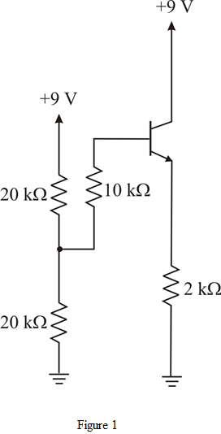

Determine the voltage .
.
Determine the resistance .
.
Refer to Figure P6.154 in the text book.
(a)
Draw the DC equivalent circuit for the circuit as shown in Figure P6.154 in the text book.

Determine the voltage.
Determine the resistance.
Draw the equivalent circuit of the circuit as shown in Figure 1.
Apply Kirchhoff’s voltage law in the loop as shown in Figure 2.
Simplify further.
Thus, the dc emitter current is.
is.
The value of  is,
is,
Thus, the value of is.
is.
Determine the resistance .
.
Determine the resistance .
.
Thus, the value of isand the value of
isand the value of is.
is.
Draw the hybrid equivalent circuit of the circuit as shown in Figure 2.
equivalent circuit of the circuit as shown in Figure 2.
The output voltage is,
Apply Kirchhoff’s current law at the node voltage.
The base voltage  is,
is,
The input resistance is,
Thus, the input resistance is .
Thus, the voltage gain is.
is.
(c)
Replace the capacitor  with open circuit. Then the bootstrapping is eliminated.
with open circuit. Then the bootstrapping is eliminated.
Draw the equivalent circuit.
The resistance is,
The input resistance is,
Thus, the input resistance is.
is.
Hence, the value obtain for is lower than the value obtain with the bootstrap in part (b).
is lower than the value obtain with the bootstrap in part (b).
The output voltage is,
The voltage  is,
is,
The voltage gain is
Thus, the voltage gain is.
is.
Hence, the value obtain for is lower than the value obtain with the bootstrap in part (b).
is lower than the value obtain with the bootstrap in part (b).